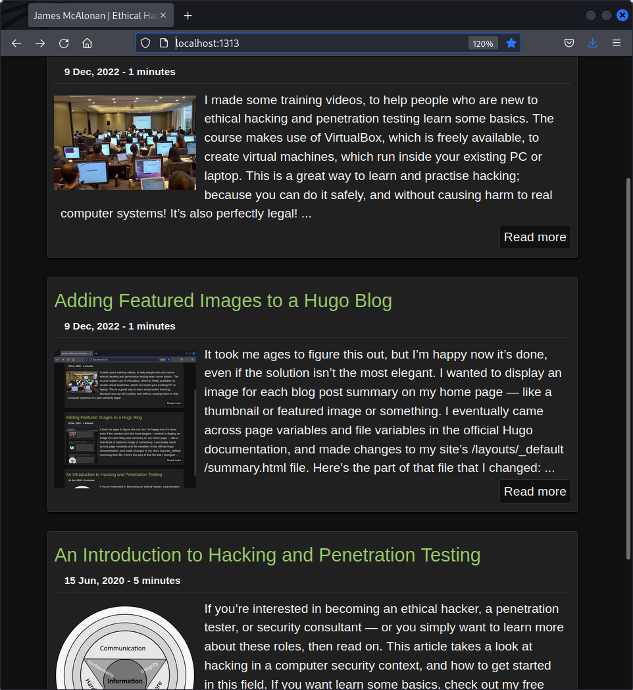
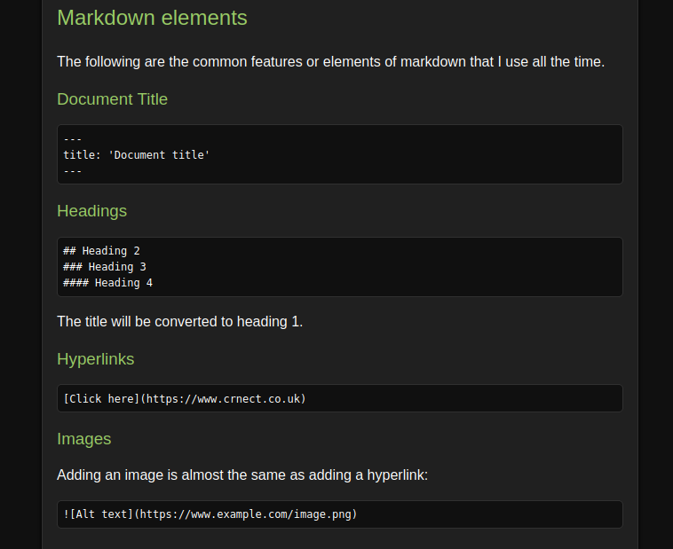
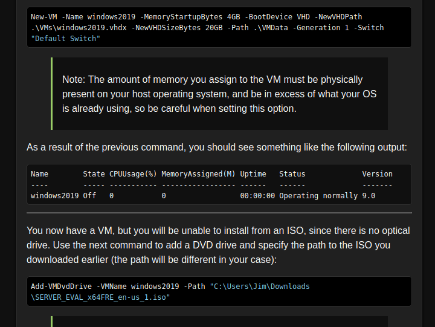
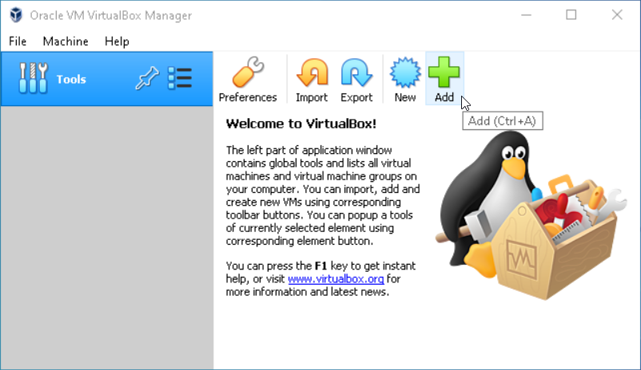
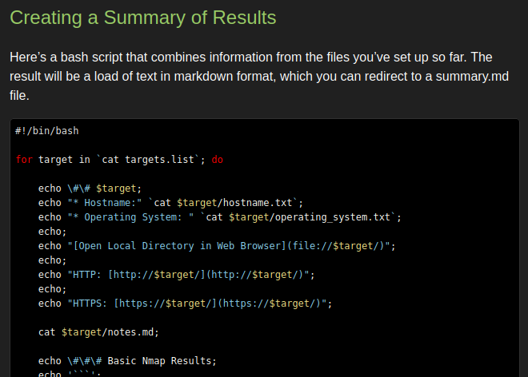

Hello, and welcome to my site. Here you’ll find blog posts about technology, links to my online training content, and more information about yours truly. Should you wish to contact me, you can find details here.
I made some training videos, to help people who are new to ethical hacking and penetration testing learn some basics. The course makes use of VirtualBox, which is freely available, to create virtual machines, which run inside your existing PC or laptop. This is a great way to learn and practise hacking; because you can do it safely, and without causing harm to real computer systems! It’s also perfectly legal! ...

It took me ages to figure this out, but I’m happy now it’s done, even if the solution isn’t the most elegant. I wanted to display an image for each blog post summary on my home page — like a thumbnail or featured image or something.
I eventually came across page variables and file variables in the official Hugo documentation, and made changes to my site’s /layouts/_default/summary.html file. Here’s the part of that file that I changed: ...
If you’re interested in becoming an ethical hacker, a penetration tester, or security consultant — or you simply want to learn more about these roles, then read on. This article takes a look at hacking in a computer security context, and how to get started in this field.
If you want learn some basics, check out my free training course.
What is a Hacker? Hackers get a a lot of bad press. ...
Disclaimer: I did very little research (if any) on this. You should consider the following, my opinion, and not a well-thought-out answer to the question.
With frequent new releases of huge games like Cyberpunk 2077 now commonplace, and with the computer games industry raking in huge profits, something you may be wondering is, why isn’t the artificial intelligence — the AI — in computer games, well, better? After all, is this not the age of machine learning and self-driving cars? ...
I’ve spent most of the —no, all day, recreating this site, with the help of Hugo1 — not a person, but an open-source, static website builder. It’s taken me this long, because I’ve been learning how Hugo works, as I (Hu)go. I like Hugo now. Thanks Hugo.
Every link on the site should now take you to a page, that actually has something on it. I’ve re-organised my content as follows: ...

The majority of the pages that make up this website are written in markdown (a lightweight markup language created by John Gruber) before being converted to hypertext markup language (HTML) using Hugo (https://gohugo.io).
I used to use Pandoc, a command-line tool designed to convert almost any document type, from or to any other type. For example, HTML to Word (.docx), spreadsheets to portable document format (PDF), or in my case, markdown to HTML. ...
In this post, I will show you how the Raspberry Pi 4 (Model B) running Raspberry Pi OS (formerly Raspbian) can be configured as a router. This is something I’ve thought about doing for a while, but there is limited up-to-date information on the subject, so I decided to do some research, and provide my findings here in an easily digestible format.
Background The primary role I want my Pi router to serve, is forwarding traffic from its Ethernet port, to its wireless interface. ...

If you want to learn how to hack, you’ll need some machines that you can legally hack and experiment with, without risk of doing harm. Rather than use physical machines, which most of us are unlikely to have lying around, you can use virtual machines. A virtual machine (VM) runs inside an existing operating system, such as Windows, and shares its resources. You could have a host OS of Windows 10, running several VMs, each using a chunk of the host OS’s physical memory, storage capacity and CPU time. ...

In this tutorial I will show you how to download and install the latest version of VirtualBox to your Windows 10 computer.
1. Download VirtualBox Point your web browser to https://www.virtualbox.org/wiki/Downloads and then click the Windows hosts link, as shown in figure 1.
Choose to save the .exe file, to the place where you normally save your downloads. The file’s name will be similar to VirtualBox-6.1.8-137981-Win.exe, and depends on the version number. ...

This piece is all about taking detailed notes during a penetration test, and how to organize those notes. As well as the notes you write yourself, you’ll need to organize the vast amount of output generated by tools. One way of keeping everything organized, is to use some software for that exact purpose. But, I want to look at creating some custom bash scripts instead.
Rather than store information in a database, I’m going to use good-old flat files organised into directories. ...